Show the code
# Installation and Setup
required_packages <- c("ggplot2", "dplyr", "gridExtra", "moments", "nortest")
# Load required packages
library(ggplot2)
library(dplyr)
library(gridExtra)
library(moments)
library(nortest)
set.seed(123)Building an Intuition for the core ideas behind the CLT
# Installation and Setup
required_packages <- c("ggplot2", "dplyr", "gridExtra", "moments", "nortest")
# Load required packages
library(ggplot2)
library(dplyr)
library(gridExtra)
library(moments)
library(nortest)
set.seed(123)generate_distribution <- function(dist_type, n = 10000, params = list()) {
switch(dist_type,
"exponential" = rexp(n, rate = params$rate %||% 0.5),
"normal" = rnorm(n, mean = params$mean %||% 0, sd = params$sd %||% 1),
"uniform" = runif(n, min = params$min %||% 0, max = params$max %||% 10),
"gamma" = rgamma(n, shape = params$shape %||% 2, rate = params$rate %||% 0.5),
"beta" = rbeta(n, shape1 = params$shape1 %||% 2, shape2 = params$shape2 %||% 5),
"lognormal" = rlnorm(n, meanlog = params$meanlog %||% 0, sdlog = params$sdlog %||% 1),
"chi_squared" = rchisq(n, df = params$df %||% 3),
"weibull" = rweibull(n, shape = params$shape %||% 2, scale = params$scale %||% 1),
rexp(n, rate = 0.5) # default to exponential
)
}
# Helper function for default parameters
`%||%` <- function(x, y) if (is.null(x)) y else x
# Global parameters
n_population <- 10000
sample_size <- 30 # Size of each sample
n_samples <- 1000 # Number of samples to takeThe Central Limit Theorem (CLT) is one of the most important concepts in statistics. It states that when we take repeated random samples from any population (regardless of the shape of the original distribution), the sampling distribution of the sample mean will approach a normal distribution as the sample size increases.
# Distributions
# "exponential", "normal", "uniform", "gamma", "beta", "lognormal", "chi_squared", "weibull"
original_distribution <- generate_distribution("exponential") # Create distribution with default parameters
original_distribution <- generate_distribution("exponential")
# Create a data frame for plotting
df_original <- data.frame(values = original_distribution)
# Plot the original distribution
ggplot(df_original, aes(x = values)) +
geom_histogram(bins = 50, fill = "steelblue", alpha = 0.7, color = "black") +
geom_density(aes(y = after_stat(count) * max(after_stat(count)) / max(after_stat(density))),
color = "red", linewidth = 1) +
labs(title = "Original Distribution (Exponential)",
subtitle = paste("Mean =", round(mean(original_distribution), 2),
", SD =", round(sd(original_distribution), 2)),
x = "Values", y = "Frequency") +
theme_minimal() +
theme(plot.title = element_text(hjust = 0.5),
plot.subtitle = element_text(hjust = 0.5))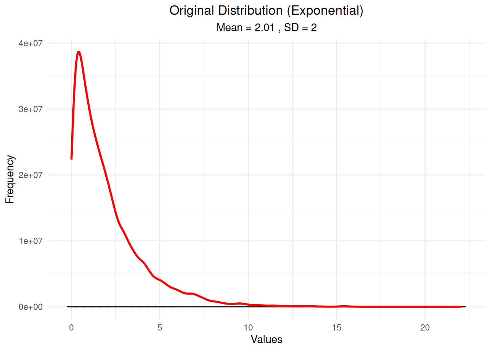
# Step 1: Generate random samples from the distribution
sample_means <- numeric(n_samples)
sample_sds <- numeric(n_samples)
sample_data_list <- list()
for(i in 1:n_samples) {
sample_data <- sample(original_distribution, size = sample_size, replace = TRUE)
sample_means[i] <- mean(sample_data)
sample_sds[i] <- sd(sample_data)
sample_data_list[[i]] <- sample_data
}
cat("Generated", n_samples, "samples of size", sample_size, "\n")Generated 1000 samples of size 30 cat("First few sample means:", round(sample_means[1:5], 3), "\n")First few sample means: 1.691 2.024 2.07 1.544 2.131 # Visualize where samples are drawn from the population
# Show first 3 samples as points on the population distribution
sample_points <- data.frame()
for(i in 1:3) {
sample_data <- sample_data_list[[i]]
sample_points <- rbind(sample_points,
data.frame(values = sample_data,
sample = paste("Sample", i),
mean = rep(mean(sample_data), length(sample_data))))
}
# Plot population with sample points overlaid
ggplot() +
geom_histogram(data = df_original, aes(x = values),
bins = 50, fill = "steelblue", alpha = 0.7, color = "black") +
geom_density(data = df_original, aes(x = values, y = after_stat(count) * max(after_stat(count)) / max(after_stat(density))),
color = "red", linewidth = 1) +
geom_point(data = sample_points, aes(x = values, y = 0, color = sample),
size = 2, alpha = 0.8, position = position_jitter(height = 50)) +
geom_vline(data = sample_points, aes(xintercept = mean, color = sample),
linewidth = 1, linetype = "dashed") +
labs(title = "Population Distribution with Sample Points",
subtitle = "Points show individual values from first 3 samples\nDashed lines show sample means",
x = "Values", y = "Frequency") +
theme_minimal() +
theme(plot.title = element_text(hjust = 0.5),
plot.subtitle = element_text(hjust = 0.5)) +
scale_color_manual(values = c("Sample 1" = "orange", "Sample 2" = "purple", "Sample 3" = "green"))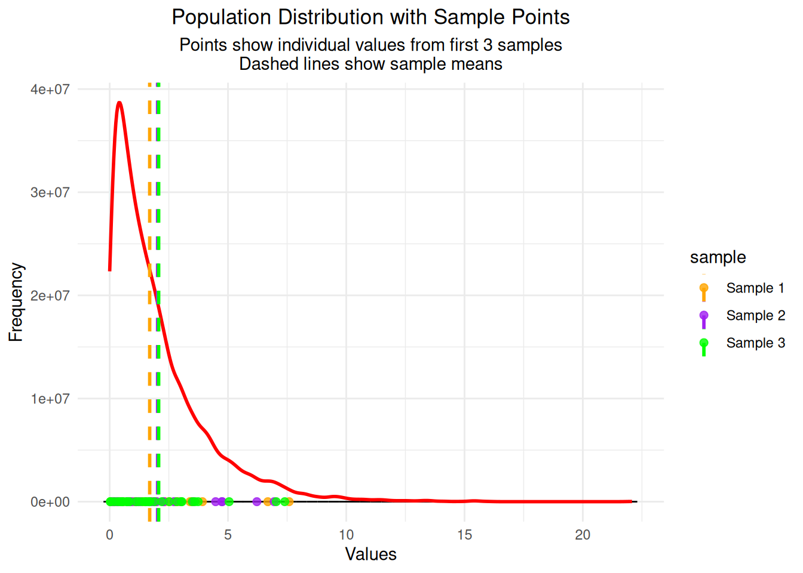
# Step 2: Create data frame for the sampling distribution
df_sample_means <- data.frame(sample_mean = sample_means)
cat("Created data frame with", nrow(df_sample_means), "sample means\n")Created data frame with 1000 sample meansImportant Note: The samples are drawn from the original population distribution (exponential in this case). What you’re seeing is the sampling distribution of the means, which is different from the original population distribution. This is exactly what the Central Limit Theorem predicts - even though we’re sampling from a skewed exponential distribution, the distribution of sample means becomes approximately normal!
# Step 3a: Calculate key statistics for the sampling distribution
sampling_mean <- mean(sample_means)
sampling_sd <- sd(sample_means)
population_mean <- mean(original_distribution)
theoretical_se <- sd(original_distribution) / sqrt(sample_size)
cat("=== Sampling Distribution Statistics ===\n")=== Sampling Distribution Statistics ===cat("Mean of sample means:", round(sampling_mean, 3), "\n")Mean of sample means: 2.024 cat("SD of sample means (observed SE):", round(sampling_sd, 3), "\n")SD of sample means (observed SE): 0.366 cat("Population mean:", round(population_mean, 3), "\n")Population mean: 2.006 cat("Theoretical standard error:", round(theoretical_se, 3), "\n")Theoretical standard error: 0.365 cat("Difference (observed - theoretical):", round(sampling_sd - theoretical_se, 3), "\n")Difference (observed - theoretical): 0.001 # Step 3b: Create the histogram of sample means
hist_plot <- ggplot(df_sample_means, aes(x = sample_mean)) +
geom_histogram(bins = 30, fill = "lightgreen", alpha = 0.7, color = "black") +
labs(title = "Histogram of Sample Means",
subtitle = paste("1000 samples of size", sample_size),
x = "Sample Mean", y = "Frequency") +
theme_minimal() +
theme(plot.title = element_text(hjust = 0.5),
plot.subtitle = element_text(hjust = 0.5))
print(hist_plot)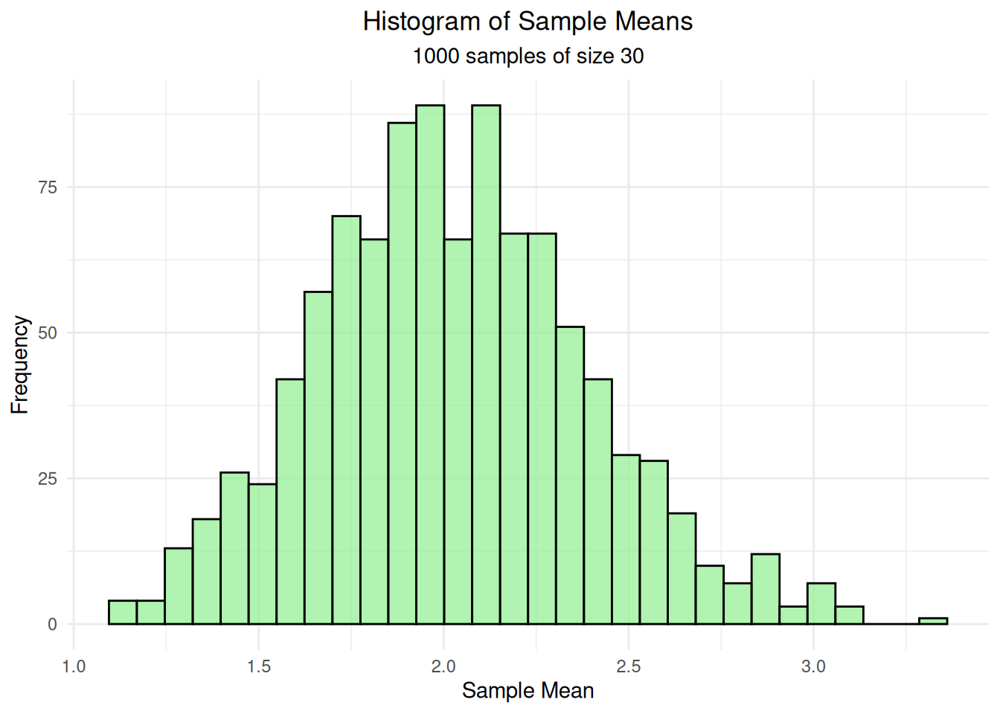
# Step 3c: Add density curve to show the shape
# Calculate density separately to get proper scaling
density_data <- density(df_sample_means$sample_mean, adjust = 1.5)
# Scale density to match histogram scale
max_freq <- max(hist(df_sample_means$sample_mean, breaks = 30, plot = FALSE)$counts)
density_scaled <- density_data$y * max_freq / max(density_data$y)
density_plot <- ggplot(df_sample_means, aes(x = sample_mean)) +
geom_histogram(bins = 30, fill = "lightgreen", alpha = 0.7, color = "black") +
geom_line(data = data.frame(x = density_data$x, y = density_scaled),
aes(x = x, y = y), color = "blue", linewidth = 2) +
labs(title = "Sample Means with Density Curve",
subtitle = "Blue curve shows the estimated probability density (scaled to match histogram)",
x = "Sample Mean", y = "Frequency") +
theme_minimal() +
theme(plot.title = element_text(hjust = 0.5),
plot.subtitle = element_text(hjust = 0.5))
print(density_plot)
# Step 3d: Add population mean reference line
final_plot <- ggplot(df_sample_means, aes(x = sample_mean)) +
geom_histogram(bins = 30, fill = "lightgreen", alpha = 0.7, color = "black") +
geom_line(data = data.frame(x = density_data$x, y = density_scaled),
aes(x = x, y = y), color = "blue", linewidth = 2) +
geom_vline(xintercept = population_mean, color = "red", linewidth = 2) +
labs(title = "Distribution of Sample Means",
subtitle = paste("Mean of means =", round(sampling_mean, 3),
", SD of means =", round(sampling_sd, 3)),
x = "Sample Mean", y = "Frequency",
caption = "Red line = Population mean | Blue curve = Density estimate | Green bars = Histogram of sample means") +
theme_minimal() +
theme(plot.title = element_text(hjust = 0.5),
plot.subtitle = element_text(hjust = 0.5),
plot.caption = element_text(hjust = 0.5, size = 10))
print(final_plot)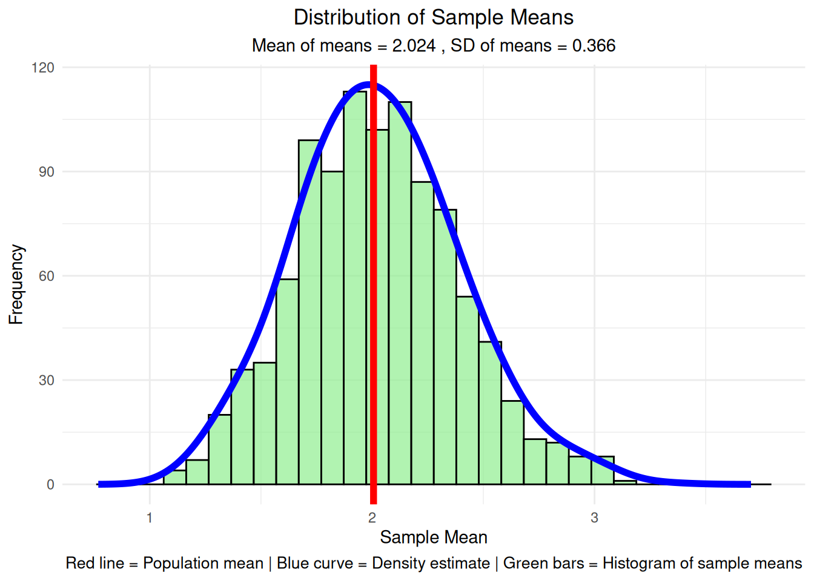
What Each Step Shows:
Note: These statistics are shown after the graph because they provide a detailed breakdown of what we just visualized. The graph gives us the big picture, while these statistics give us the specific numbers for the first few samples.
# Step 4: Show statistics for first few individual samples
cat("=== Individual Sample Statistics ===\n")=== Individual Sample Statistics ===for(i in 1:5) {
cat("Sample", i, "mean:", round(sample_means[i], 3),
"SD:", round(sample_sds[i], 3), "\n")
}Sample 1 mean: 1.691 SD: 1.867
Sample 2 mean: 2.024 SD: 1.821
Sample 3 mean: 2.07 SD: 1.877
Sample 4 mean: 1.544 SD: 1.541
Sample 5 mean: 2.131 SD: 3.022 # Step 5: Compare population vs sampling distribution
cat("\n=== Population vs Sampling Distribution ===\n")
=== Population vs Sampling Distribution ===cat("Average of all sample means:", round(mean(sample_means), 3), "\n")Average of all sample means: 2.024 cat("Population mean:", round(mean(original_distribution), 3), "\n")Population mean: 2.006 cat("Theoretical SE:", round(sd(original_distribution)/sqrt(sample_size), 3), "\n")Theoretical SE: 0.365 cat("Observed SE:", round(sd(sample_means), 3), "\n")Observed SE: 0.366 # Step 6: Load gridExtra for multiple plots
library(gridExtra)
cat("Loaded gridExtra package for plot arrangement\n")Loaded gridExtra package for plot arrangement# Step 7: Create QQ plots for first 4 individual samples
qq_plots <- list()
for(i in 1:4) {
sample_data <- sample_data_list[[i]]
p <- ggplot(data.frame(sample_data = sample_data), aes(sample = sample_data)) +
stat_qq() +
stat_qq_line(color = "red", linewidth = 1) +
labs(title = paste("Sample", i, "QQ Plot"),
subtitle = paste("Mean =", round(mean(sample_data), 2),
", SD =", round(sd(sample_data), 2)),
x = "Theoretical Quantiles", y = "Sample Quantiles") +
theme_minimal() +
theme(plot.title = element_text(hjust = 0.5, size = 10),
plot.subtitle = element_text(hjust = 0.5, size = 8))
qq_plots[[i]] <- p
}
do.call(grid.arrange, c(qq_plots, ncol = 2))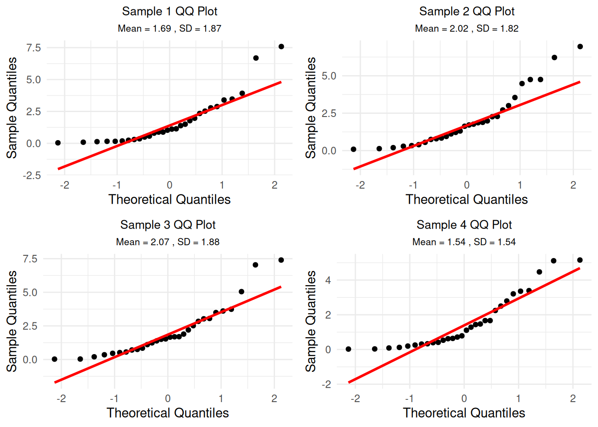
Understanding the QQ Plots: These QQ plots show how well each individual sample follows a normal distribution. Since we’re sampling from an exponential distribution (which is skewed), individual samples will also be skewed and won’t follow the red line perfectly. This is expected - the CLT applies to the distribution of means, not individual samples.
ggplot(df_sample_means, aes(sample = sample_mean)) +
stat_qq() +
stat_qq_line(color = "red", linewidth = 1) +
labs(title = "QQ Plot: Distribution of Sample Means",
subtitle = paste("Sample size =", sample_size, ", Number of samples =", n_samples),
x = "Theoretical Quantiles", y = "Sample Quantiles") +
theme_minimal() +
theme(plot.title = element_text(hjust = 0.5),
plot.subtitle = element_text(hjust = 0.5))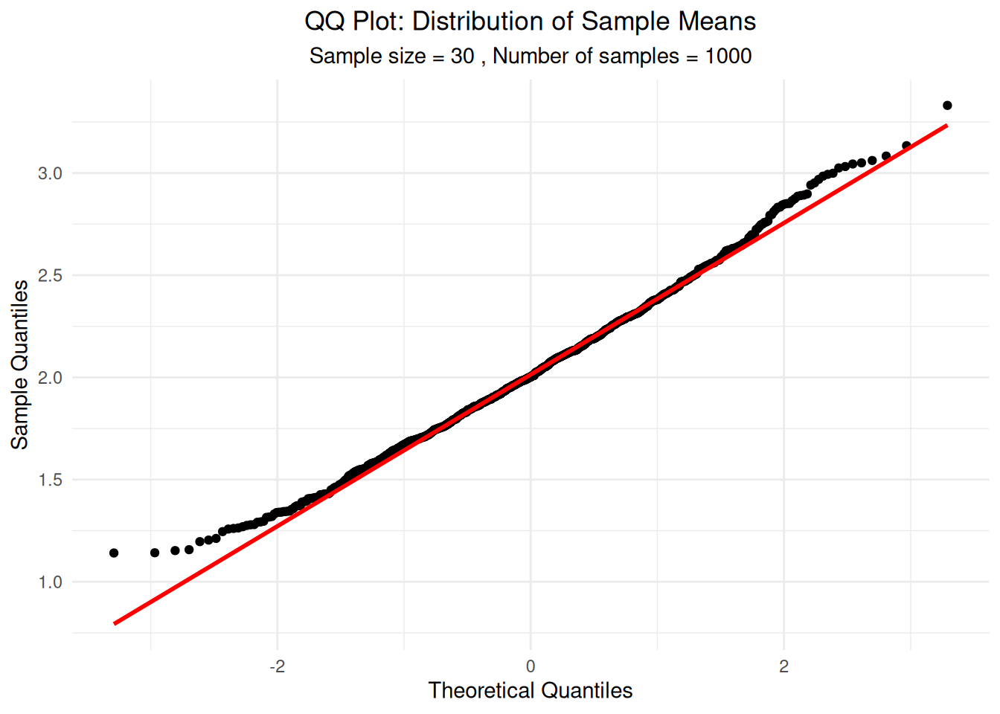
The Central Limit Theorem also explains why adding many independent random variables produces a normal distribution, regardless of the original distributions’ shapes.
# Step 1: Set up parameters for the simulation
set.seed(456) # Different seed for this simulation
n_observations <- 10000
max_variables <- 10
# Create a skewed distribution (exponential) to start with
base_distribution <- rexp(n_observations, rate = 0.5)
cat("Base distribution: Exponential with rate = 0.5\n")Base distribution: Exponential with rate = 0.5cat("Mean =", round(mean(base_distribution), 3), ", SD =", round(sd(base_distribution), 3), "\n")Mean = 1.969 , SD = 1.942 # Step 2: Create data frame for different numbers of variables
sums_data <- data.frame()
for(n_vars in 1:max_variables) {
# Generate n_vars independent random variables
variables_matrix <- matrix(rexp(n_observations * n_vars, rate = 0.5),
nrow = n_observations, ncol = n_vars)
# Sum the variables for each observation
sums <- rowSums(variables_matrix)
# Add to data frame
sums_data <- rbind(sums_data,
data.frame(sum = sums,
n_variables = rep(n_vars, n_observations)))
}
cat("Generated sums for 1 to", max_variables, "random variables\n")Generated sums for 1 to 10 random variables# Step 3: Plot individual exponential distribution (n=1) with proper density scaling
single_subset <- sums_data[sums_data$n_variables == 1, ]
# Calculate density with proper scaling
density_single <- density(single_subset$sum, adjust = 1.5)
max_freq_single <- max(hist(single_subset$sum, breaks = 50, plot = FALSE)$counts)
density_scaled_single <- density_single$y * max_freq_single / max(density_single$y)
single_var_plot <- ggplot(single_subset, aes(x = sum)) +
geom_histogram(bins = 50, fill = "orange", alpha = 0.7, color = "black") +
geom_line(data = data.frame(x = density_single$x, y = density_scaled_single),
aes(x = x, y = y), color = "red", linewidth = 1.5) +
labs(title = "Single Exponential Random Variable",
subtitle = "Original skewed distribution",
x = "Value", y = "Frequency") +
theme_minimal() +
theme(plot.title = element_text(hjust = 0.5),
plot.subtitle = element_text(hjust = 0.5))
print(single_var_plot)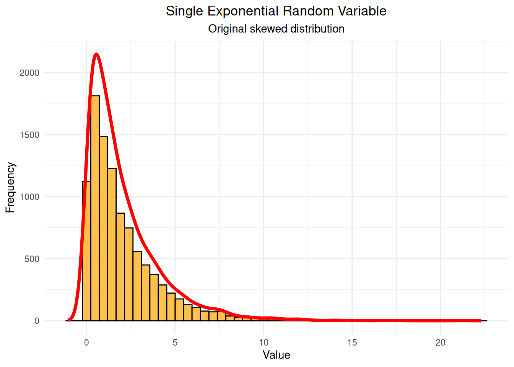
# Step 4: Plot sum of 2 variables with proper density scaling
two_subset <- sums_data[sums_data$n_variables == 2, ]
density_two <- density(two_subset$sum, adjust = 1.5)
max_freq_two <- max(hist(two_subset$sum, breaks = 50, plot = FALSE)$counts)
density_scaled_two <- density_two$y * max_freq_two / max(density_two$y)
two_var_plot <- ggplot(two_subset, aes(x = sum)) +
geom_histogram(bins = 50, fill = "yellow", alpha = 0.7, color = "black") +
geom_line(data = data.frame(x = density_two$x, y = density_scaled_two),
aes(x = x, y = y), color = "red", linewidth = 1.5) +
labs(title = "Sum of 2 Exponential Random Variables",
subtitle = "Starting to look more symmetric",
x = "Sum", y = "Frequency") +
theme_minimal() +
theme(plot.title = element_text(hjust = 0.5),
plot.subtitle = element_text(hjust = 0.5))
print(two_var_plot)
# Step 5: Plot sum of 5 variables with proper density scaling
five_subset <- sums_data[sums_data$n_variables == 5, ]
density_five <- density(five_subset$sum, adjust = 1.5)
max_freq_five <- max(hist(five_subset$sum, breaks = 50, plot = FALSE)$counts)
density_scaled_five <- density_five$y * max_freq_five / max(density_five$y)
five_var_plot <- ggplot(five_subset, aes(x = sum)) +
geom_histogram(bins = 50, fill = "lightgreen", alpha = 0.7, color = "black") +
geom_line(data = data.frame(x = density_five$x, y = density_scaled_five),
aes(x = x, y = y), color = "red", linewidth = 1.5) +
labs(title = "Sum of 5 Exponential Random Variables",
subtitle = "Much more bell-shaped",
x = "Sum", y = "Frequency") +
theme_minimal() +
theme(plot.title = element_text(hjust = 0.5),
plot.subtitle = element_text(hjust = 0.5))
print(five_var_plot)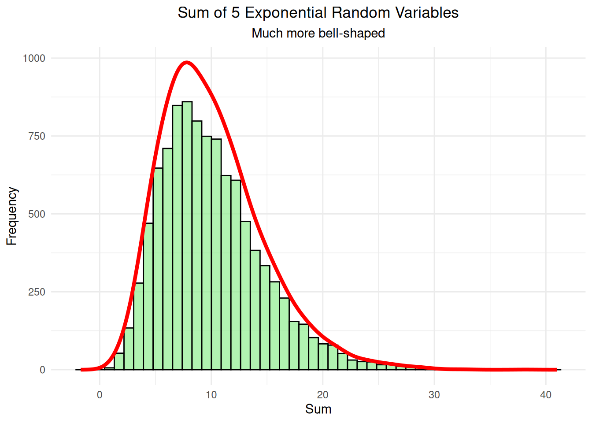
# Step 6: Plot sum of 10 variables with proper density scaling
ten_subset <- sums_data[sums_data$n_variables == 10, ]
density_ten <- density(ten_subset$sum, adjust = 1.5)
max_freq_ten <- max(hist(ten_subset$sum, breaks = 50, plot = FALSE)$counts)
density_scaled_ten <- density_ten$y * max_freq_ten / max(density_ten$y)
ten_var_plot <- ggplot(ten_subset, aes(x = sum)) +
geom_histogram(bins = 50, fill = "lightblue", alpha = 0.7, color = "black") +
geom_line(data = data.frame(x = density_ten$x, y = density_scaled_ten),
aes(x = x, y = y), color = "red", linewidth = 1.5) +
labs(title = "Sum of 10 Exponential Random Variables",
subtitle = "Very close to normal distribution",
x = "Sum", y = "Frequency") +
theme_minimal() +
theme(plot.title = element_text(hjust = 0.5),
plot.subtitle = element_text(hjust = 0.5))
print(ten_var_plot)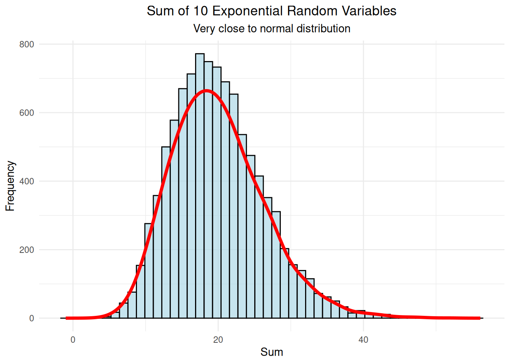
# Step 7: Compare all distributions side by side
comparison_plot <- ggplot(sums_data, aes(x = sum, fill = factor(n_variables))) +
geom_density(alpha = 0.6) +
labs(title = "Evolution of Distribution Shape",
subtitle = "Adding more random variables makes the distribution more normal",
x = "Sum", y = "Density", fill = "Number of\nVariables") +
theme_minimal() +
theme(plot.title = element_text(hjust = 0.5),
plot.subtitle = element_text(hjust = 0.5)) +
scale_fill_brewer(palette = "Set3")
print(comparison_plot)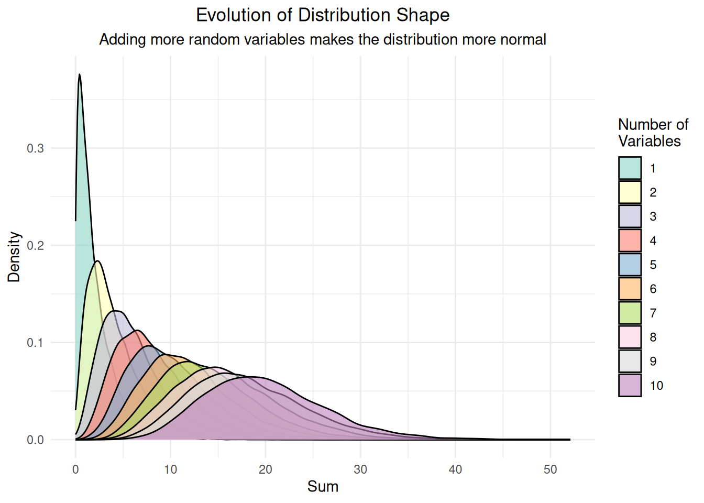
# Step 8: Create QQ plots for each distribution
qq_plots_list <- list()
for(n_vars in c(1, 2, 5, 10)) {
subset_data <- sums_data[sums_data$n_variables == n_vars, ]
p <- ggplot(subset_data, aes(sample = sum)) +
stat_qq() +
stat_qq_line(color = "red", linewidth = 1) +
labs(title = paste("QQ Plot: Sum of", n_vars, "Variables"),
subtitle = paste("Mean =", round(mean(subset_data$sum), 2),
", SD =", round(sd(subset_data$sum), 2)),
x = "Theoretical Quantiles", y = "Sample Quantiles") +
theme_minimal() +
theme(plot.title = element_text(hjust = 0.5, size = 10),
plot.subtitle = element_text(hjust = 0.5, size = 8))
qq_plots_list[[paste0("n", n_vars)]] <- p
}
# Display QQ plots in a grid
do.call(grid.arrange, c(qq_plots_list, ncol = 2))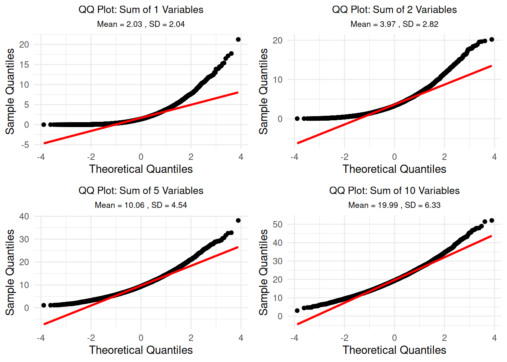
# Step 9: Show comprehensive summary statistics
cat("=== Comprehensive Summary Statistics ===\n")=== Comprehensive Summary Statistics ===cat("Note: Normal distribution has skewness = 0, kurtosis = 3\n\n")Note: Normal distribution has skewness = 0, kurtosis = 3for(n_vars in c(1, 2, 5, 10)) {
subset_data <- sums_data[sums_data$n_variables == n_vars, ]
observed_mean <- mean(subset_data$sum)
observed_sd <- sd(subset_data$sum)
observed_skew <- skewness(subset_data$sum)
observed_kurt <- kurtosis(subset_data$sum)
# Theoretical values for sum of exponential variables
theoretical_mean <- n_vars * 2 # E[X] = 1/rate = 1/0.5 = 2
theoretical_sd <- sqrt(n_vars) * 2 # SD = sqrt(n) * (1/rate)
cat("n =", n_vars, "variables:\n")
cat(" Mean: Observed =", round(observed_mean, 3),
"| Theoretical =", round(theoretical_mean, 3),
"| Difference =", round(observed_mean - theoretical_mean, 3), "\n")
cat(" SD: Observed =", round(observed_sd, 3),
"| Theoretical =", round(theoretical_sd, 3),
"| Difference =", round(observed_sd - theoretical_sd, 3), "\n")
cat(" Skewness:", round(observed_skew, 3),
"| Kurtosis:", round(observed_kurt, 3), "\n")
cat(" Distance from normal (skewness + |kurtosis-3|):",
round(abs(observed_skew) + abs(observed_kurt - 3), 3), "\n\n")
}n = 1 variables:
Mean: Observed = 2.03 | Theoretical = 2 | Difference = 0.03
SD: Observed = 2.039 | Theoretical = 2 | Difference = 0.039
Skewness: 2.034 | Kurtosis: 9.162
Distance from normal (skewness + |kurtosis-3|): 8.197
n = 2 variables:
Mean: Observed = 3.975 | Theoretical = 4 | Difference = -0.025
SD: Observed = 2.821 | Theoretical = 2.828 | Difference = -0.007
Skewness: 1.389 | Kurtosis: 5.608
Distance from normal (skewness + |kurtosis-3|): 3.997
n = 5 variables:
Mean: Observed = 10.057 | Theoretical = 10 | Difference = 0.057
SD: Observed = 4.544 | Theoretical = 4.472 | Difference = 0.071
Skewness: 0.915 | Kurtosis: 4.17
Distance from normal (skewness + |kurtosis-3|): 2.084
n = 10 variables:
Mean: Observed = 19.99 | Theoretical = 20 | Difference = -0.01
SD: Observed = 6.325 | Theoretical = 6.325 | Difference = 0.001
Skewness: 0.632 | Kurtosis: 3.657
Distance from normal (skewness + |kurtosis-3|): 1.29 # Step 10: Systematic analysis of normality convergence
cat("=== Systematic Analysis: When Does It Become 'Normal'? ===\n")=== Systematic Analysis: When Does It Become 'Normal'? ===# Calculate normality measures for all n from 1 to 10
normality_analysis <- data.frame()
for(n_vars in 1:10) {
subset_data <- sums_data[sums_data$n_variables == n_vars, ]
# Calculate various normality measures
skew <- abs(skewness(subset_data$sum))
kurt <- abs(kurtosis(subset_data$sum) - 3)
distance_from_normal <- skew + kurt
# Shapiro-Wilk test p-value (higher = more normal) - only for n >= 3
if(nrow(subset_data) >= 3 && nrow(subset_data) <= 5000) {
shapiro_p <- shapiro.test(subset_data$sum)$p.value
} else {
shapiro_p <- NA
}
# Anderson-Darling test statistic (lower = more normal) - only for n >= 8
if(nrow(subset_data) >= 8) {
ad_stat <- ad.test(subset_data$sum)$statistic
} else {
ad_stat <- NA
}
normality_analysis <- rbind(normality_analysis,
data.frame(n_variables = n_vars,
skewness = skew,
kurtosis_deviation = kurt,
distance_from_normal = distance_from_normal,
shapiro_p = shapiro_p,
anderson_darling = ad_stat))
}
# Print the analysis
print(normality_analysis) n_variables skewness kurtosis_deviation distance_from_normal shapiro_p
A 1 2.0343137 6.1624794 8.196793 NA
A1 2 1.3886897 2.6084032 3.997093 NA
A2 3 1.2005207 2.1619714 3.362492 NA
A3 4 0.9995151 1.5278877 2.527403 NA
A4 5 0.9148454 1.1696152 2.084461 NA
A5 6 0.8761856 1.2382380 2.114424 NA
A6 7 0.8055370 1.0913248 1.896862 NA
A7 8 0.6367657 0.5265843 1.163350 NA
A8 9 0.6653845 0.6875862 1.352971 NA
A9 10 0.6321731 0.6573511 1.289524 NA
anderson_darling
A 472.19770
A1 235.57296
A2 159.69691
A3 110.44024
A4 97.17577
A5 81.42825
A6 64.54992
A7 47.71938
A8 48.94546
A9 40.60021# Find when it becomes "practically normal"
cat("\n=== Practical Normality Thresholds ===\n")
=== Practical Normality Thresholds ===cat("Common thresholds for 'practically normal':\n")Common thresholds for 'practically normal':cat("- |Skewness| < 0.5: n =", min(which(normality_analysis$skewness < 0.5)), "\n")- |Skewness| < 0.5: n = Inf cat("- |Kurtosis-3| < 0.5: n =", min(which(normality_analysis$kurtosis_deviation < 0.5)), "\n")- |Kurtosis-3| < 0.5: n = Inf # Only show Shapiro-Wilk results if we have valid p-values
valid_shapiro <- !is.na(normality_analysis$shapiro_p)
if(any(valid_shapiro)) {
cat("- Shapiro-Wilk p > 0.05: n =", min(which(normality_analysis$shapiro_p > 0.05 & valid_shapiro)), "\n")
cat("- Shapiro-Wilk p > 0.10: n =", min(which(normality_analysis$shapiro_p > 0.10 & valid_shapiro)), "\n")
} else {
cat("- Shapiro-Wilk test: Not available (sample size constraints)\n")
}- Shapiro-Wilk test: Not available (sample size constraints)cat("- Distance from normal < 1.0: n =", min(which(normality_analysis$distance_from_normal < 1.0)), "\n")- Distance from normal < 1.0: n = Inf # Step 11: Visualize the convergence to normality
convergence_plot <- ggplot(normality_analysis, aes(x = n_variables)) +
geom_line(aes(y = skewness, color = "Skewness"), linewidth = 1.5) +
geom_line(aes(y = kurtosis_deviation, color = "Kurtosis Deviation"), linewidth = 1.5) +
geom_line(aes(y = distance_from_normal, color = "Distance from Normal"), linewidth = 1.5) +
geom_hline(yintercept = 0.5, linetype = "dashed", color = "red", alpha = 0.7) +
geom_hline(yintercept = 1.0, linetype = "dashed", color = "orange", alpha = 0.7) +
labs(title = "Convergence to Normality",
subtitle = "How quickly do distributions become 'practically normal'?",
x = "Number of Variables", y = "Deviation from Normal",
color = "Measure") +
theme_minimal() +
theme(plot.title = element_text(hjust = 0.5),
plot.subtitle = element_text(hjust = 0.5)) +
scale_color_manual(values = c("Skewness" = "blue",
"Kurtosis Deviation" = "green",
"Distance from Normal" = "purple")) +
annotate("text", x = 8, y = 0.6, label = "|Skewness| < 0.5", color = "red", size = 3) +
annotate("text", x = 8, y = 1.1, label = "Distance < 1.0", color = "orange", size = 3)
print(convergence_plot)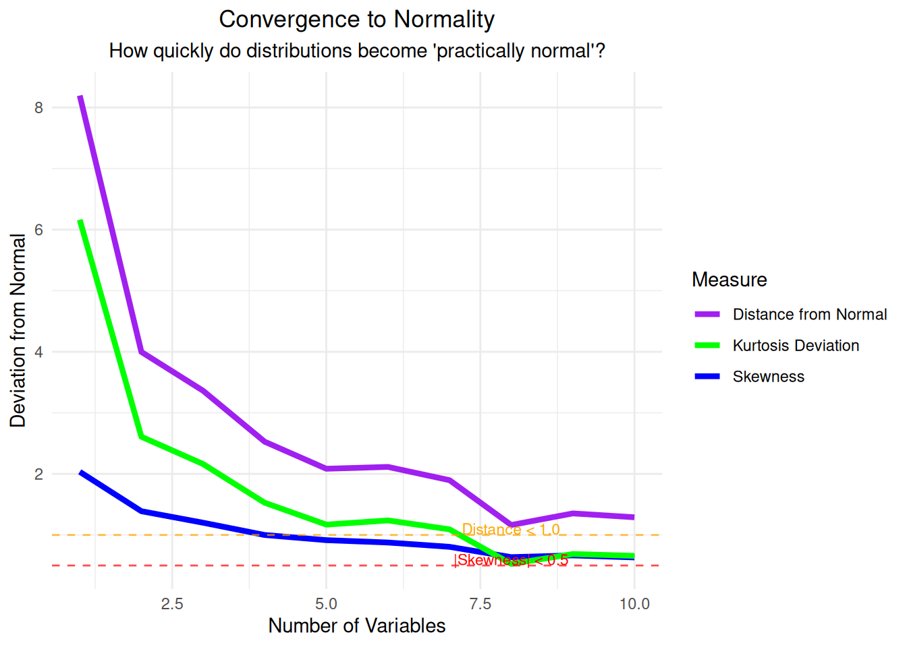
Key Insights from Simulation 2:
The Central Limit Theorem states that if \(X_1, X_2, ..., X_n\) are independent and identically distributed random variables with mean \(\mu\) and standard deviation \(\sigma\), then:
\(\frac{\bar{X} - \mu}{\sigma/\sqrt{n}} \xrightarrow{d} N(0,1)\)
Where \(\bar{X} = \frac{1}{n}\sum_{i=1}^{n} X_i\) is the sample mean.
This means that for large enough sample sizes, the sampling distribution of the sample mean will be approximately normal with: - Mean = \(\mu\) (population mean) - Standard Error = \(\frac{\sigma}{\sqrt{n}}\) (population standard deviation divided by square root of sample size)